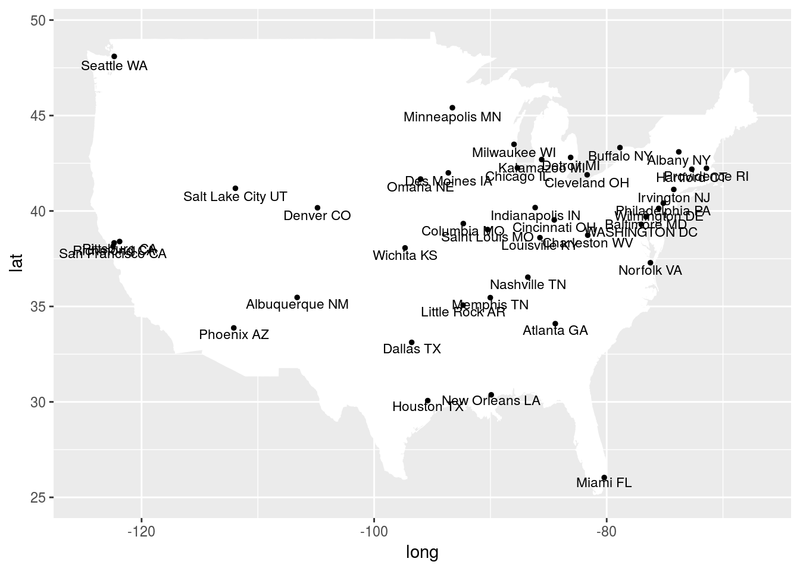
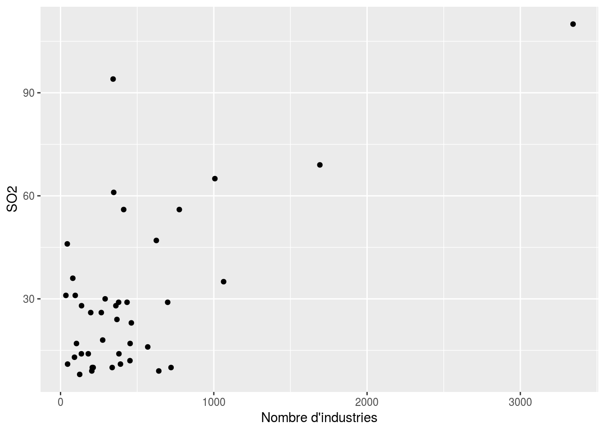
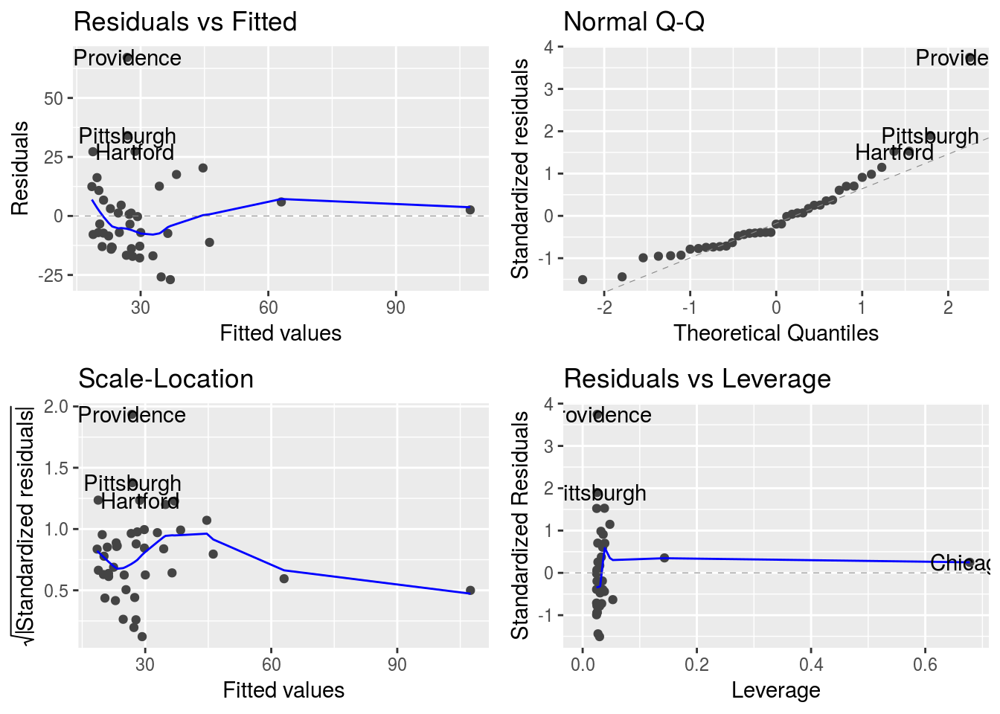
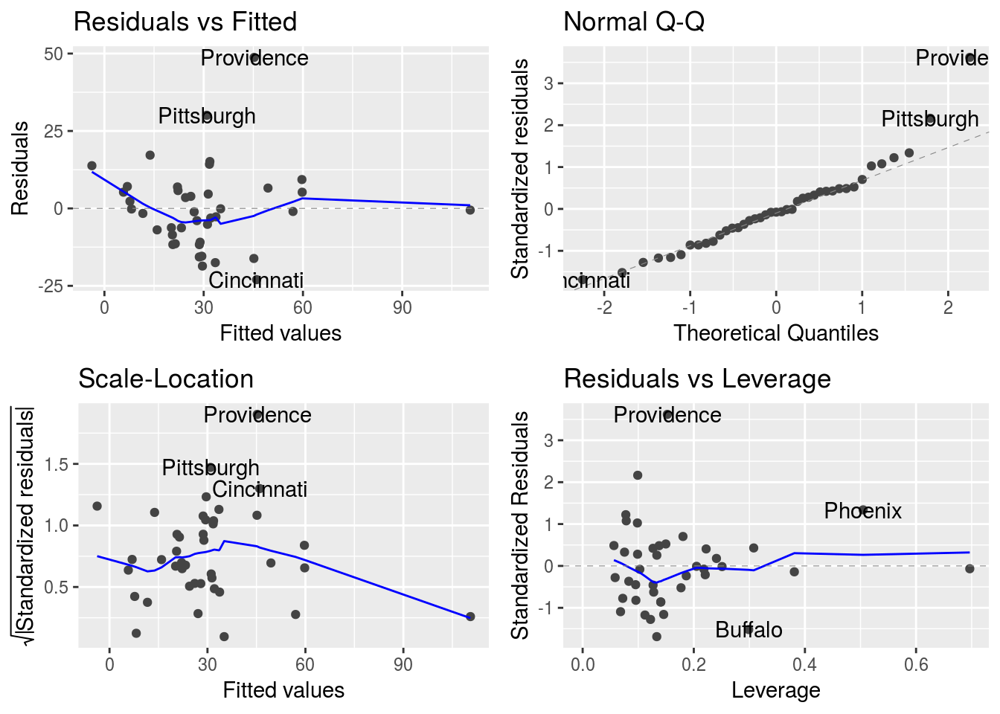
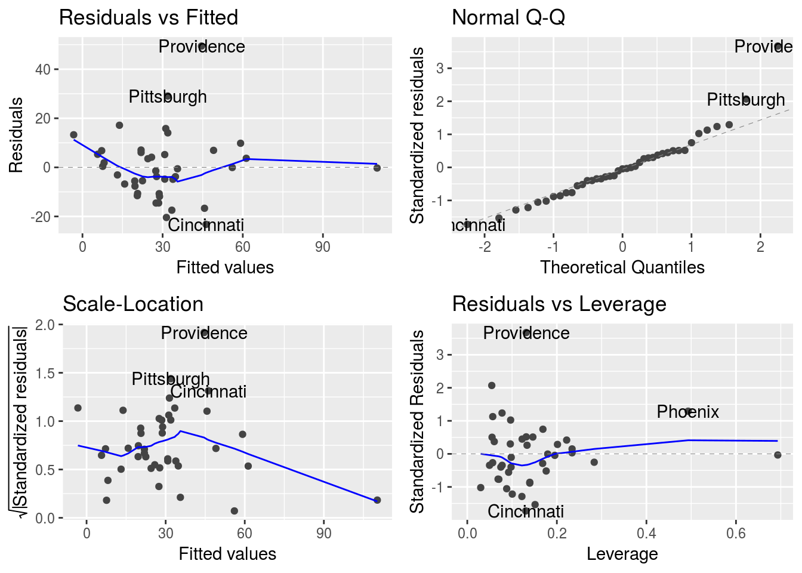

Pour étudier la pollution dans des villes américaine, on a mesuré différentes variables. Les valeurs présentées sont les moyennes annuelles des années 1969 à 1971.\ SO2 : Dyoxide de soufre augmente les risques de pluies acides\ temp : temperature \ manuf : nbre de societe employant plus de 20 salariés \ pop : population en milliers \ wind : vitesse moyenne du vent annuel en miles/Heure \ precip hauteur de precipitations annuelles en pouces \ days : nbre de jours de precipitations \
usdata <- read.table("data/USAIR2.DAT", skip=8, header=T, sep=";", row.names=1)
head(usdata)## SO2 temp manuf pop wind precip days
## Phoenix 10 70.3 213 582 6.0 7.05 36
## Little rock 13 61.0 91 132 8.2 48.52 100
## San Francisco 12 56.7 453 716 8.7 20.66 67
## Denver 17 51.9 454 515 9.0 12.95 86
## Hartford 56 49.1 412 158 9.0 43.37 127
## Wilmington 36 54.0 80 80 9.0 40.25 114data(us.cities)
nbCity <- dim(usdata)[1]
head(us.cities$name)## [1] "Abilene TX" "Akron OH" "Alameda CA" "Albany GA" "Albany NY"
## [6] "Albany OR"##indices of studied cities in us.cities
ind.cities <- c(694, 509, 802, 247, 387, 990, 944, 429, 559, 41,
173, 422, 248, 988, 522, 609, 55, 250, 568, 443,
785, 650, 7, 5, 126, 180, 185, 195, 693, 700, 726,
549, 601, 225, 413, 794, 619, 753, 834, 165, 567)
us <- map_data("state")
us <- map_data("state")
gg <- ggplot() + geom_map(data=us, map=us,
aes(x=long, y=lat, map_id=region),
fill="#ffffff", color="#ffffff", size=0.15)## Warning: Ignoring unknown aesthetics: x, yus_grapf <- us.cities %>% filter(name %in% us.cities$name[ind.cities])
gg + geom_point(data=us_grapf, aes(x=long, y=lat*1.01), size=1) + geom_text(data = us_grapf, aes(x= long, y=lat,label=name), size=3)
usdata %>% summarise_all( mean)## SO2 temp manuf pop wind precip days
## 1 30.04878 55.76341 463.0976 608.6098 9.443902 36.76902 113.9024usdata %>% summarise_all( sd)## SO2 temp manuf pop wind precip days
## 1 23.47227 7.227716 563.4739 579.113 1.428644 11.77155 26.50642cor(usdata)## SO2 temp manuf pop wind
## SO2 1.00000000 -0.43360020 0.64476873 0.49377958 0.09469045
## temp -0.43360020 1.00000000 -0.19004216 -0.06267813 -0.34973963
## manuf 0.64476873 -0.19004216 1.00000000 0.95526935 0.23794683
## pop 0.49377958 -0.06267813 0.95526935 1.00000000 0.21264375
## wind 0.09469045 -0.34973963 0.23794683 0.21264375 1.00000000
## precip 0.05429434 0.38625342 -0.03241688 -0.02611873 -0.01299438
## days 0.36956363 -0.43024212 0.13182930 0.04208319 0.16410559
## precip days
## SO2 0.05429434 0.36956363
## temp 0.38625342 -0.43024212
## manuf -0.03241688 0.13182930
## pop -0.02611873 0.04208319
## wind -0.01299438 0.16410559
## precip 1.00000000 0.49609671
## days 0.49609671 1.00000000Regression SO2 en fonction de manuf
ggplot(usdata, aes(x=manuf, y=SO2)) + geom_point() + xlab("Nombre d'industries")
Ajustement du modèle et test de l’effet de la variable manuf :
us.lm <- lm(SO2~manuf, data=usdata)
model.matrix(us.lm)## (Intercept) manuf
## Phoenix 1 213
## Little rock 1 91
## San Francisco 1 453
## Denver 1 454
## Hartford 1 412
## Wilmington 1 80
## Washington 1 434
## Jackson 1 136
## Miami 1 207
## Atlanta 1 368
## Chicago 1 3344
## Indianpolis 1 361
## Des Moines 1 104
## Wichita 1 125
## Louisville 1 291
## New Orleans 1 204
## Baltimore 1 625
## Detroit 1 1064
## Minneapolis 1 699
## Kansas 1 381
## St Louis 1 775
## Omaha 1 181
## Albuquerque 1 46
## Albany 1 44
## Buffalo 1 391
## Cincinnati 1 462
## Cleveland 1 1007
## Columbia 1 266
## Philadelphia 1 1692
## Pittsburgh 1 347
## Providence 1 343
## Menphis 1 337
## Nashville 1 275
## Dallas 1 641
## Houston 1 721
## Salt Lake City 1 137
## Norfolk 1 96
## Richmond 1 197
## Seattle 1 379
## Charleston 1 35
## Milwaukee 1 569
## attr(,"assign")
## [1] 0 1autoplot(us.lm)
h.us.lm <- hatvalues(us.lm)
sum(h.us.lm)## [1] 2sum(h.us.lm)/length(usdata$SO2)## [1] 0.04878049us.lm0 <- lm (SO2 ~ 1, data=usdata)
summary(us.lm)##
## Call:
## lm(formula = SO2 ~ manuf, data = usdata)
##
## Residuals:
## Min 1Q Median 3Q Max
## -26.976 -12.968 -3.495 6.710 67.177
##
## Coefficients:
## Estimate Std. Error t value Pr(>|t|)
## (Intercept) 17.610574 3.691587 4.770 2.58e-05 ***
## manuf 0.026859 0.005099 5.268 5.36e-06 ***
## ---
## Signif. codes: 0 '***' 0.001 '**' 0.01 '*' 0.05 '.' 0.1 ' ' 1
##
## Residual standard error: 18.17 on 39 degrees of freedom
## Multiple R-squared: 0.4157, Adjusted R-squared: 0.4007
## F-statistic: 27.75 on 1 and 39 DF, p-value: 5.363e-06anova(us.lm)## Analysis of Variance Table
##
## Response: SO2
## Df Sum Sq Mean Sq F value Pr(>F)
## manuf 1 9161.7 9161.7 27.75 5.363e-06 ***
## Residuals 39 12876.2 330.2
## ---
## Signif. codes: 0 '***' 0.001 '**' 0.01 '*' 0.05 '.' 0.1 ' ' 1Anova(us.lm)## Anova Table (Type II tests)
##
## Response: SO2
## Sum Sq Df F value Pr(>F)
## manuf 9161.7 1 27.75 5.363e-06 ***
## Residuals 12876.2 39
## ---
## Signif. codes: 0 '***' 0.001 '**' 0.01 '*' 0.05 '.' 0.1 ' ' 1predict(us.lm,
newdata = data.frame(manuf = 200), interval = "prediction")## fit lwr upr
## 1 22.98232 -14.31481 60.27944Quelle est la question ?
us.lm2 <- lm((SO2)~ precip + temp + manuf+ pop + wind + days,data=usdata)
autoplot(us.lm2)
us.lm0 <- lm((SO2)~ 1,data=usdata)
## test de type I
anova(us.lm2)## Analysis of Variance Table
##
## Response: (SO2)
## Df Sum Sq Mean Sq F value Pr(>F)
## precip 1 65.0 65.0 0.3033 0.585439
## temp 1 5352.3 5352.3 24.9859 1.725e-05 ***
## manuf 1 6972.9 6972.9 32.5512 2.079e-06 ***
## pop 1 1706.2 1706.2 7.9648 0.007912 **
## wind 1 636.1 636.1 2.9697 0.093923 .
## days 1 22.1 22.1 0.1032 0.749972
## Residuals 34 7283.3 214.2
## ---
## Signif. codes: 0 '***' 0.001 '**' 0.01 '*' 0.05 '.' 0.1 ' ' 1## test de type II
Anova(us.lm2, type="II")## Anova Table (Type II tests)
##
## Response: (SO2)
## Sum Sq Df F value Pr(>F)
## precip 427.3 1 1.9949 0.1669176
## temp 892.5 1 4.1664 0.0490557 *
## manuf 3640.1 1 16.9929 0.0002278 ***
## pop 1443.1 1 6.7365 0.0138462 *
## wind 658.1 1 3.0723 0.0886504 .
## days 22.1 1 0.1032 0.7499725
## Residuals 7283.3 34
## ---
## Signif. codes: 0 '***' 0.001 '**' 0.01 '*' 0.05 '.' 0.1 ' ' 1Les valeurs estimées des paramètres
summary(us.lm2)##
## Call:
## lm(formula = (SO2) ~ precip + temp + manuf + pop + wind + days,
## data = usdata)
##
## Residuals:
## Min 1Q Median 3Q Max
## -23.004 -8.542 -0.991 5.758 48.758
##
## Coefficients:
## Estimate Std. Error t value Pr(>|t|)
## (Intercept) 111.72848 47.31810 2.361 0.024087 *
## precip 0.51236 0.36276 1.412 0.166918
## temp -1.26794 0.62118 -2.041 0.049056 *
## manuf 0.06492 0.01575 4.122 0.000228 ***
## pop -0.03928 0.01513 -2.595 0.013846 *
## wind -3.18137 1.81502 -1.753 0.088650 .
## days -0.05205 0.16201 -0.321 0.749972
## ---
## Signif. codes: 0 '***' 0.001 '**' 0.01 '*' 0.05 '.' 0.1 ' ' 1
##
## Residual standard error: 14.64 on 34 degrees of freedom
## Multiple R-squared: 0.6695, Adjusted R-squared: 0.6112
## F-statistic: 11.48 on 6 and 34 DF, p-value: 5.419e-07stepus.back <- step(us.lm2, direction="backward")## Start: AIC=226.37
## (SO2) ~ precip + temp + manuf + pop + wind + days
##
## Df Sum of Sq RSS AIC
## - days 1 22.1 7305.4 224.50
## <none> 7283.3 226.37
## - precip 1 427.3 7710.6 226.71
## - wind 1 658.1 7941.4 227.92
## - temp 1 892.5 8175.8 229.11
## - pop 1 1443.1 8726.3 231.78
## - manuf 1 3640.1 10923.4 240.99
##
## Step: AIC=224.49
## (SO2) ~ precip + temp + manuf + pop + wind
##
## Df Sum of Sq RSS AIC
## <none> 7305.4 224.50
## - wind 1 636.1 7941.5 225.92
## - precip 1 785.4 8090.8 226.68
## - pop 1 1447.5 8752.9 229.91
## - temp 1 1517.4 8822.8 230.23
## - manuf 1 3636.8 10942.1 239.06stepus.forward <- step(lm(SO2~1,data=usdata), scope=~temp+pop+manuf+wind+precip+days
, direction="forward", k=log(length(usdata$pop)))## Start: AIC=261.48
## SO2 ~ 1
##
## Df Sum of Sq RSS AIC
## + manuf 1 9161.7 12876 243.16
## + pop 1 5373.2 16665 253.73
## + temp 1 4143.3 17895 256.65
## + days 1 3009.9 19028 259.17
## <none> 22038 261.48
## + wind 1 197.6 21840 264.82
## + precip 1 65.0 21973 265.07
##
## Step: AIC=243.16
## SO2 ~ manuf
##
## Df Sum of Sq RSS AIC
## + pop 1 3759.5 9116.6 232.72
## + temp 1 2212.3 10663.8 239.14
## + days 1 1816.1 11060.0 240.64
## <none> 12876.2 243.16
## + precip 1 124.7 12751.4 246.47
## + wind 1 80.6 12795.6 246.62
##
## Step: AIC=232.72
## SO2 ~ manuf + pop
##
## Df Sum of Sq RSS AIC
## <none> 9116.6 232.72
## + days 1 684.97 8431.7 233.23
## + temp 1 577.98 8538.7 233.75
## + precip 1 148.26 8968.4 235.76
## + wind 1 146.93 8969.7 235.76stepus.stepwise <- step(us.lm2, direction="both")## Start: AIC=226.37
## (SO2) ~ precip + temp + manuf + pop + wind + days
##
## Df Sum of Sq RSS AIC
## - days 1 22.1 7305.4 224.50
## <none> 7283.3 226.37
## - precip 1 427.3 7710.6 226.71
## - wind 1 658.1 7941.4 227.92
## - temp 1 892.5 8175.8 229.11
## - pop 1 1443.1 8726.3 231.78
## - manuf 1 3640.1 10923.4 240.99
##
## Step: AIC=224.49
## (SO2) ~ precip + temp + manuf + pop + wind
##
## Df Sum of Sq RSS AIC
## <none> 7305.4 224.50
## - wind 1 636.1 7941.5 225.92
## + days 1 22.1 7283.3 226.37
## - precip 1 785.4 8090.8 226.68
## - pop 1 1447.5 8752.9 229.91
## - temp 1 1517.4 8822.8 230.23
## - manuf 1 3636.8 10942.1 239.06autoplot(stepus.stepwise)
summary(stepus.stepwise)##
## Call:
## lm(formula = (SO2) ~ precip + temp + manuf + pop + wind, data = usdata)
##
## Residuals:
## Min 1Q Median 3Q Max
## -23.253 -7.655 -0.581 6.059 49.438
##
## Coefficients:
## Estimate Std. Error t value Pr(>|t|)
## (Intercept) 100.15245 30.27521 3.308 0.002182 **
## precip 0.41947 0.21624 1.940 0.060498 .
## temp -1.12129 0.41586 -2.696 0.010707 *
## manuf 0.06489 0.01554 4.174 0.000188 ***
## pop -0.03933 0.01494 -2.633 0.012499 *
## wind -3.08240 1.76562 -1.746 0.089622 .
## ---
## Signif. codes: 0 '***' 0.001 '**' 0.01 '*' 0.05 '.' 0.1 ' ' 1
##
## Residual standard error: 14.45 on 35 degrees of freedom
## Multiple R-squared: 0.6685, Adjusted R-squared: 0.6212
## F-statistic: 14.12 on 5 and 35 DF, p-value: 1.409e-07anova(stepus.stepwise)## Analysis of Variance Table
##
## Response: (SO2)
## Df Sum Sq Mean Sq F value Pr(>F)
## precip 1 65.0 65.0 0.3112 0.580467
## temp 1 5352.3 5352.3 25.6430 1.323e-05 ***
## manuf 1 6972.9 6972.9 33.4072 1.506e-06 ***
## pop 1 1706.2 1706.2 8.1742 0.007114 **
## wind 1 636.1 636.1 3.0478 0.089622 .
## Residuals 35 7305.4 208.7
## ---
## Signif. codes: 0 '***' 0.001 '**' 0.01 '*' 0.05 '.' 0.1 ' ' 1Anova(stepus.stepwise)## Anova Table (Type II tests)
##
## Response: (SO2)
## Sum Sq Df F value Pr(>F)
## precip 785.4 1 3.7628 0.0604983 .
## temp 1517.4 1 7.2700 0.0107070 *
## manuf 3636.8 1 17.4237 0.0001881 ***
## pop 1447.5 1 6.9351 0.0124987 *
## wind 636.1 1 3.0478 0.0896221 .
## Residuals 7305.4 35
## ---
## Signif. codes: 0 '***' 0.001 '**' 0.01 '*' 0.05 '.' 0.1 ' ' 1